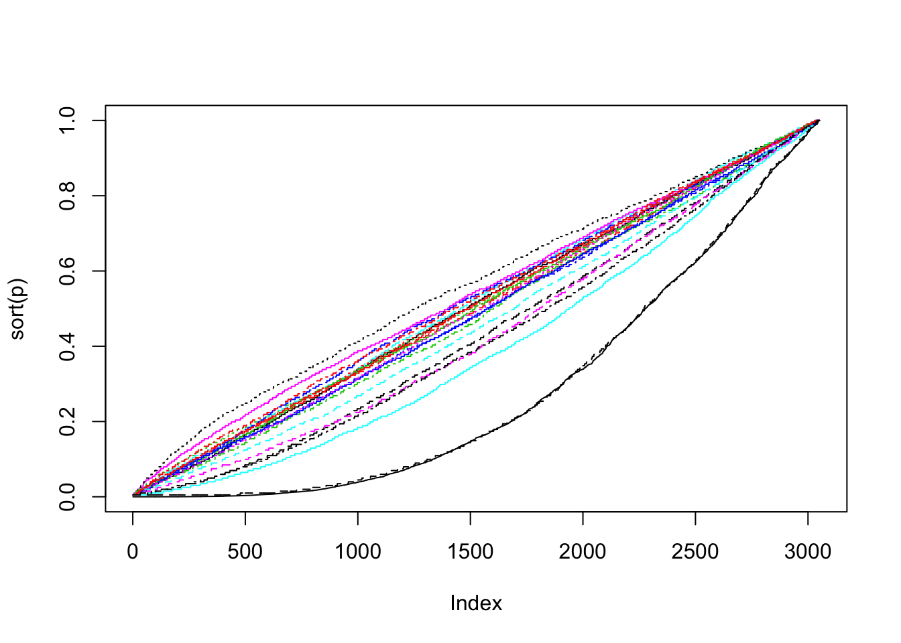
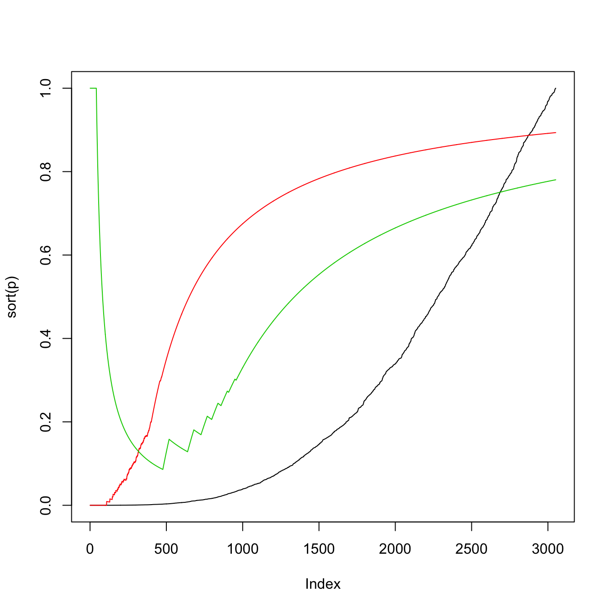

library("sansSouci")
data(golub, package="multtest")
#dat <- head(golub, 300)
dat <- golub
cls <- golub.cl
res <- rowWelchTests(dat, cls)
str(res)## List of 3
## $ statistic: num [1:3051] 1.759 0.91 -0.098 -0.339 -1.37 ...
## $ parameter: num [1:3051] 11 12.5 15 31.3 26.2 ...
## $ p.value : num [1:3051] 0.106 0.38 0.923 0.737 0.182 ...
## - attr(*, "class")= chr "htest"p <- res$p.value
B <- 200
res0 <- testByRandomization(dat, B=B, flavor = "perm", cls = cls)
str(res0)## List of 4
## $ T : num [1:3051] 1.759 0.91 -0.098 -0.339 -1.37 ...
## $ T0: num [1:3051, 1:200] -1.732 -0.654 -1.231 -0.379 -0.875 ...
## $ p : num [1:3051] 0.179 0.468 0.91 0.736 0.199 ...
## $ p0: num [1:3051, 1:200] 0.184 0.567 0.264 0.687 0.373 ...rsd <- -t(rowSortDesc(-t(res0$p0)))
plot(sort(p), t='l')
matlines(rsd[, 1:20])
lines(sort(res0$p), t='l', col=1, lty=2)
alpha <- 0.05
library("cherry")## Loading required package: bitops## Loading required package: lpSolve## Loading required package: Matrix## Warning: package 'Matrix' was built under R version 3.4.2## Loading required package: slamhom <- hommelFast(p)
cs <- cherry::curveSimes(hom, plot = FALSE, alpha = alpha)if (FALSE) { ## caveat: 'jointFWERControl' assumes one-sided tests!
X0 <- res0$T0
x <- res0$T
} else { ## solution: use (two-sided) p-values
X0 <- -qnorm(res0$p0)
x <- -qnorm(res0$p)
}
m <- length(x)
bnr0 <- jointFWERControl(X0, refFamily="Simes", alpha=alpha, stat=x, kMax=m, maxStepsDown = 1)## [1] "Joint Family-Wise Error Rate control: Step down procedure based on Simes family"Vbar0 <- bnr0$Vbar
bnr <- jointFWERControl(X0, refFamily="Simes", alpha=alpha, stat=x, kMax=m)## [1] "Joint Family-Wise Error Rate control: Step down procedure based on Simes family"Vbar <- bnr$Vbar
bnrB <- jointFWERControl(X0, refFamily="kFWER", alpha=alpha, kMax=m)## [1] "Arguement 'stat' not provided: cannot perform step-down control"
## [1] "Joint Family-Wise Error Rate control: Single step procedure based on kFWER family"VbarB <- bnrB$Vbar pbs <- posthocBySimes(p, 1:10, alpha)
bnrS <- jointFWERControl(X0, refFamily="Simes", alpha=alpha, kMax=m, maxStepsDown = 0)## [1] "Joint Family-Wise Error Rate control: Single step procedure based on Simes family"plot(sort(p), t='l')
lines(1-cs/(1:m), col=2) ## what??
lines(Vbar/(1:m), col=3)
lines(VbarB/(1:m), col=4)
sessionInfo()## R version 3.4.1 (2017-06-30)
## Platform: x86_64-apple-darwin15.6.0 (64-bit)
## Running under: OS X El Capitan 10.11.6
##
## Matrix products: default
## BLAS: /Library/Frameworks/R.framework/Versions/3.4/Resources/lib/libRblas.0.dylib
## LAPACK: /Library/Frameworks/R.framework/Versions/3.4/Resources/lib/libRlapack.dylib
##
## locale:
## [1] en_US.UTF-8/fr_FR.UTF-8/en_US.UTF-8/C/en_US.UTF-8/en_US.UTF-8
##
## attached base packages:
## [1] stats graphics grDevices utils datasets methods base
##
## other attached packages:
## [1] cherry_0.6-11 slam_0.1-40 Matrix_1.2-12 lpSolve_5.6.13
## [5] bitops_1.0-6 sansSouci_0.4.12
##
## loaded via a namespace (and not attached):
## [1] Rcpp_0.12.14 matrixStats_0.52.2 lattice_0.20-35
## [4] digest_0.6.12 rprojroot_1.2 grid_3.4.1
## [7] backports_1.1.1 magrittr_1.5 evaluate_0.10.1
## [10] stringi_1.1.6 rmarkdown_1.8 tools_3.4.1
## [13] stringr_1.2.0 yaml_2.1.14 compiler_3.4.1
## [16] htmltools_0.3.6 knitr_1.17